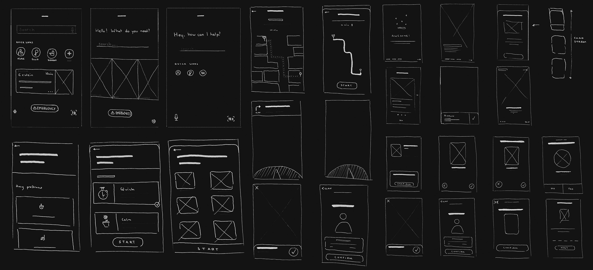
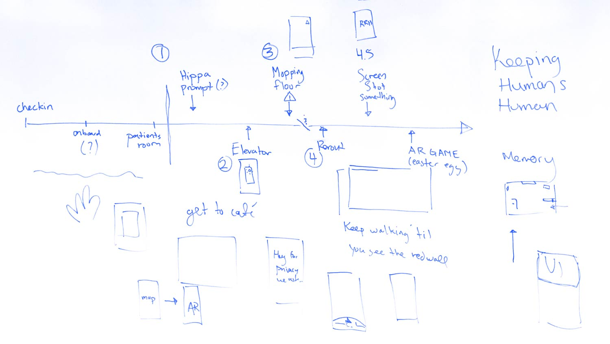

Lifeline is an exploratory project designed by Amanda Ho and Luka Schulz for Rochester Regional Health (RRH). At the heart of this project is a desire to question the necessity of Augmented Reality (AR) while also determining the qualities that separate it from other interactive materials. It should be noted that every illustration for this project was done by Amanda. All 3D and motion tracking were done by me. Together, we worked on everything else.
Old Habits Die Hard
New technologies often have the habit of out-shadowing older, and sometimes more appropriate technologies. So when RRH asked for an AR navigation app, my first thought was, “Why does a hospital need AR? Is there a more important issue that needs to be solved if people are getting lost?” After a few conversations with the client, it became evident that they wanted a vision of what AR had to offer; what could it do that people might not be thinking about currently?
With this in mind, the next challenge became making an AR vision into reality. In the first few weeks, our time was spent on pencil and paper flushing out the user flow, architecture, and main screens. However, it quickly became clear that even though we were working, we weren’t solving problems with augmented reality. The majority of our wireframes consisted of traditional UI elements and a bit of hand-wavy AR. Our process had to evolve with the technology if we wanted to make any progress.

fig. 1 Initial sketches show no major insights into AR 👉👈
If 2D wireframes are for 2D UI, could we use “3D wireframes” to help us design 3D UI? Seeing as there weren’t any obvious tools for the job, we had to make do with what we knew. It definitely wasn’t as simple as pencil and paper, but After Effects and Cinema 4D became our best options. We got an iPhone and began filming spaces that were hospital-esque, motion tracking the shots, and comping in simple UI. The gallery below highlights some of our major explorations and proof of concepts (click and drag to swipe through).
fig 2. Interacting with posters
fig 3. On-screen navigation
fig 4. AR wayfinding signage
fig 5. On-floor directions
fig 6. On-floor map
fig 7. Bathroom directions
fig 8. AR micro-interaction
fig 9. Patient privacy barrier
fig 10. Fast spin tracking test
fig 11. Adaptive UI (top right corner)
fig 12. Open door privacy barrier
These 3D wireframes gave us tremendous insight into the possibilities of AR, as well as what could realistically be pulled off. Furthermore, they pushed us to ask some major questions that ended up shaping our work over the following eight weeks, the three most important questions being:
- Which problems are traditional UI better suited to solve?
- How can AR fit into and augment existing infrastructure?
- What is the interplay between physical and digital?
Had we not taken the time to play, I don’t think we would have been able to come up with the solutions we did. Our explorations made clear that the story we were going to tell had to focus on the moments of delight that couldn’t exist anywhere else but in AR. To tell this story, we felt we had to find a situation that everyone could understand: navigating to a new location.
The Solution
The story we ended up telling imagines a person’s journey from a patient’s room to the cafeteria for the first time. As a team, Amanda and I decided that the best way to showcase our solution was through short vignettes that captured signature moments in AR. The five moments we chose to focus on were opening AR mode (MeView), using an elevator, encountering a block, screenshotting information, and returning home.

fig. 13 The user flow from a patient’s room to the cafeteria and back
Unique to all five situations was the requirement that they are compliant with the Health Insurance Portability and Accountability Act (HIPPA). HIPPA protects personal information within a hospital meaning our designs had to be considerate of all personal information that might be seen in the hospital, especially inside a patient’s room. As a legal matter, it made sense, but at times it was unsettling to design for censorship.
fig. 14 A user attempting to open MeView in a patient room
↑ The first moment in our flow shows a person trying to open MeView in a patient’s room. Because of HIPPA, we decided AR should not be allowed in any patient room. The reason we selected this moment was for its frustrating nature. Just like slow internet connections and ridiculous pop-ups, AR is bound to have some rough patches that will take some getting used to. We felt it’s important to handle these moments with grace and avoid making the user feel like they are to blame. To do this, we paired simple animation with reassuring copy.
It should be noted that all the UI has been pushed to the right with the intention that users could switch between right- and left-handed mode so as to ease some of the strain that might happen during long periods of navigation.
fig. 15 A brief moment of AR complementing an already existing physical object
↑ This micro-interaction came directly from our initial iterations and the question: How can AR fit into and augment existing infrastructure? The physical world is probably not going to change for AR and it would be better to solve problems in AR realistically, not idealistically. This tiny moment is not life-changing, but sometimes it’s the little things that make all the difference.
fig. 16 Rerouting a user in AR after encountering a blockage
↑ Whether intentionally or unintentionally, rerouting is likely to happen while navigating complex spaces. This made it an important moment to get right. As with many GPS apps, we felt the act of rerouting only made sense when the path was no longer being followed. The only thing a person needs to do to get a new route is to go in a different direction. To protect against unwanted rerouting, we provide the option to cancel any direction change.
Additionally, we wanted to create a compound interaction that would allow people to notify the hospital of unknown blockages that might be causing direction changes. The user pulls down on the yellow triangle and a button is revealed that sends the hospital a geotagged location as well as an optional description from the user.
In terms of AR UI, we felt good design and animation principles should not be forgotten. The UI on the floor consists of a wide path indicated by small dots, as well as an animated arrow through the center. After several tests, and a visit to the hospital, we realized a single line often gets blocked by foot traffic. The wide path allows for the user to see if they are on the right path or not even in situations with more traffic—of all the interactions explored, this is possibly the most unrealistic as object occlusion is computationally expensive and a problem that has yet to be solved.
fig. 17 Handling in-app screenshots
↑ As we began to think about the interplay between physical and digital, posters and artwork immediately came to mind. Hospitals hang artwork and posters but don’t have easy ways of linking information to what is shown. In AR, this can be easily solved with callouts. Little targets floating in space can be clicked on to surface 2D cards containing more information. This interplay between phone and environment proved to us that detailed information is best served on the phone rather than in AR space.
Along with this interaction, we also wanted to explore what would happen when a user takes a screenshot. With regards to HIPPA, we felt it might be best to override screenshotting and introduce an alternative. In this case, the person is given a high-quality scan of the artwork rather than a screenshot, ensuring that nobody is unknowingly photographed. Had there been no artwork nearby, the app would have let the user know that screenshotting is not allowed.
fig. 18 UI showing the patient that they are back home
↑ The final leg of our hospital journey brings us back home. For patients, especially those in long-term care, we believe it is critical to make them feel like they are home. The UI we created consists of a blurred out HIPPA Barrier” that serves to conceal any patient information that might be revealed by an open door or window, as well as a little pulsing home icon. Similar to the elevator, this simple moment adds personality to an otherwise sterile environment.
fig. 19 An Easter egg car game
↑ From the very beginning, we knew this project was going to be about more than just navigation. AR is a beautiful seam between the digital and physical world. Over the course of the project, we thought about what would make a hospital a happier place. This got us thinking about playrooms and building blocks and Legos and all the toys common to small waiting rooms. What if every person using the app could have their own custom toy.
The simple act of turning the phone horizontally opens up an interactive space that allows people to play and have fun while waiting. A little toy car is just the beginning. We think collaborative experiences will bring smiles to faces both young and old.
The Things We Learned
AR is not new, but it is in its infancy as a creative medium. Conceptually, it is a difficult space to breach without a strong background in development. The tools we used were less than ideal, but they proved to us a few things. First, AR needs to be experienced first hand, wireframes, no matter how good, can only take a design so far. Second, glowing colors stand out well in most environments, while fully textured objects tend to blend in. It will be a matter of time before AR begins to forge its own design language. Third, and most important, AR needs to be met with a sense of curiosity to help it find a niche in society.
Hopefully, this project sparked some ideas and questions. Call me, beep me if you wanna reach me, jk just send an email :) Thank you, for taking the time to read through this case study.
Last Edited: Mon. July 15, 2019